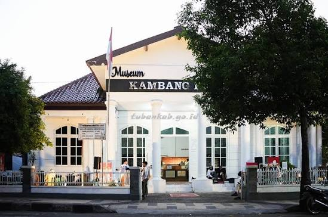
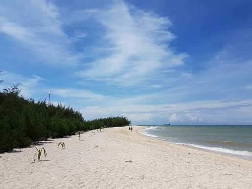
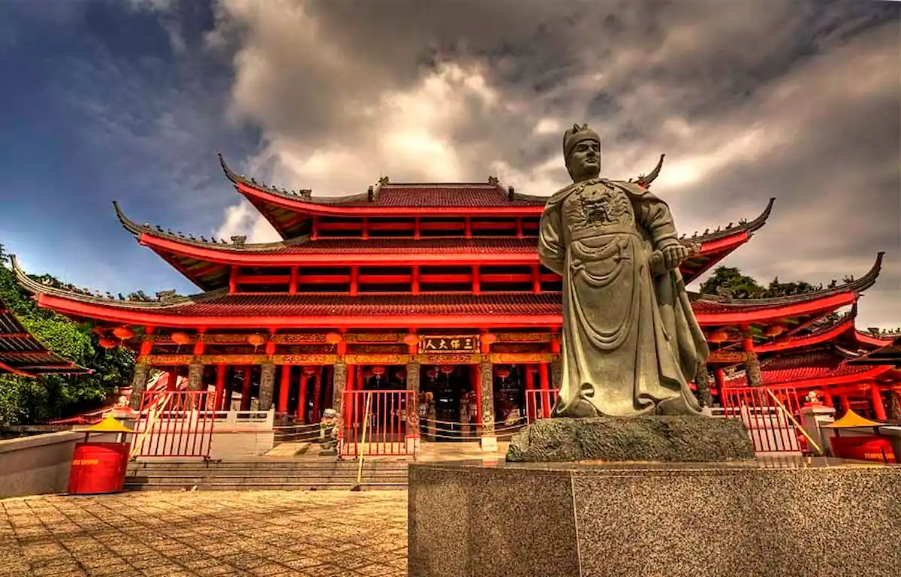
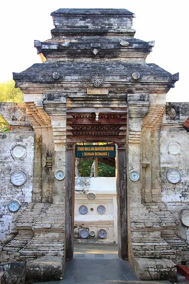

Bento Destinasi Pilihan
Museum Kambang Putih, Pantai Remen, Pantai Boom, Kelenteng Kwan Sing Bio, dan Makam Sunan Bonang.

Cagar BudayaMuseum Kambang Putih Tuban
Pusat penyimpanan benda bersejarah peninggalan masa prasejarah, koleksi keramik kuno, hingga artefak kolonial di Kabupaten Tuban[cite: 2].

Wisata BahariPantai Remen Tuban
Pantai berpasir putih bersih dengan pemandangan laut biru yang sangat indah dan asri di Kabupaten Tuban.
 Wisata Bahari
Wisata Bahari
Pantai Boom Tuban
Pelabuhan kuno bersejarah era Majapahit yang kini menjadi destinasi wisata pantai ikonik dengan jembatan menjorok ke laut.

Wisata ReligiKelenteng Kwan Sing Bio
Kelenteng megah terbesar di Asia Tenggara yang terletak langsung di tepi laut Tuban[cite: 3].

Cagar Budaya & ReligiKomplek Makam Sunan Bonang
Pusat ziarah wali songo tersohor di jantung Kota Tuban dengan arsitektur gerbang padureksan kuno bercorak khas pesisir[cite: 4].